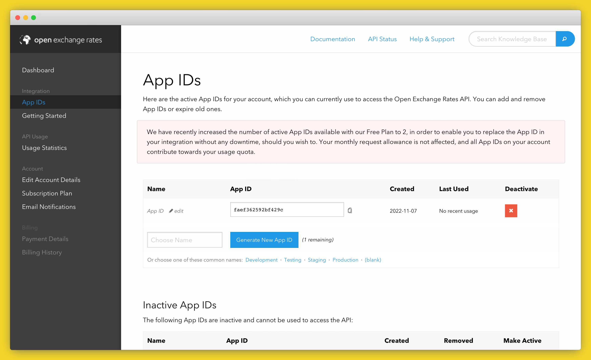
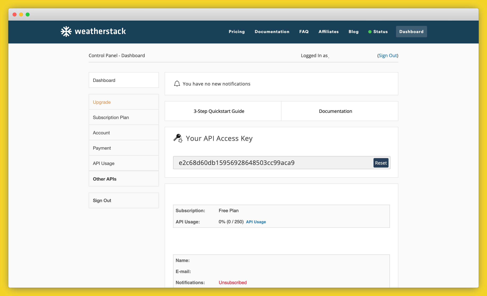

Creating and Hosting an API with Flask and Code Capsules
An API, or Application Programming Interface, is a tool enabling developers to interact with data online. Imagine: you navigate to some website and see your location's temperature displayed on their homepage. How did they present this information?
Without a doubt, they used an API. APIs are hosted on a server and operate as an access point between the user and some data.
Part of this guide takes a look at the weatherstack API – an API providing weather data. For the website to retrieve your location's temperature, they would've sent a request to an API like weatherstack. In the request, they would include information about your computer's location. weatherstack's API would then return weather data related to your locale, such as the temperature and cloud cover. The weather website will then display this data on their homepage for you to view.
In this tutorial, we'll learn how to create a personal API with Python (using Flask). Our API will use data from the weatherstack and OpenExchangeRates APIs to give us up-to-the-minute USD exchange rates and the temperature of a given city.
We'll host our API on Code Capsules so that anyone will be able to request information from it, no matter their location.
Prerequisites
Before starting, we'll need a GitHub account and knowledge of how to push code from a local repository to a remote repository.
Also ensure you've installed the following:
- Git
- Python 3.XX+
- Virtualenv
Setting Up Our Environment
First, let's set up a virtual Python environment using Virtualenv. Virtualenv provides a clean Python install with no third-party libraries or packages, allowing us to work on this project without interfering with the dependencies of our other projects.
- Open your terminal and create an empty folder.
- Navigate to the folder via your terminal, and enter:
virtualenv env
To activate the virtual environment, enter one of the following:
Linux/MacOSX
source env/bin/activate
Windows
\env\Scripts\activate.bat
If the virtual environment has activated correctly, you'll see (env) to the left of your name in the terminal.
Installing the Dependencies
Now that we've activated the virtual environment, let's take a look at the packages we'll use to create our API:
- Flask is a minimal web development framework for Python. Flask provides resources and tools for building and maintaining web applications, websites, and more.
- Gunicorn is a WSGI server that will help serve our Python application (the API hosted on Code Capsules).
- Requests is a Python library we will use to interact with APIs.
From your terminal where you activated the virtual environment, install these packages with:
pip3 install flask gunicorn requests
Note pip will have automatically been installed when you set the virtual environment if not you can follow this guide to install it.
Registering Accounts on OpenExchangeRates and weatherstack
Our API will return the current temperature of a chosen city and the USD exchange rates for three currencies. We'll create our API by combining data from two other APIs – weatherstack and OpenExchangeRates. As their names suggest, weatherstack will provide the temperature data, and OpenExchangeRates the exchange rate data.
Registering an account is required so that we can receive a unique API key. An API key is a password that lets us use a particular API. In APIs with more sensitive data, these are used to prevent unauthorised access, but for open APIs like weatherstack and OpenExchangeRates, they're used for rate limiting to prevent users from sending too many requests at once and overwhelming the system.
Creating our accounts
First, let's register an account on OpenExchangeRates. Navigate to here and:
- Sign up and log in.
- On the dashboard, click "App IDs".
-
Take note of your "App ID" (API key) you will need to paste it into the code below.

Obtaining the weatherstack API key is similar:
- Create a free account on weatherstack
-
Log in and take note of the API key presented in the control panel, you will need to paste it into the code below.

Now we can retrieve data from the OpenExchangeRates and weatherstack APIs using our API keys. Let's try that out now.
Getting exchange rates
First, let's see how requesting data from OpenExchangeRates works. Create a file named app.py and open it.
To request data from an API, we need an endpoint for the type of data we want. APIs often provide multiple endpoints for different information – for example, a weather API may have one endpoint for temperature and another for humidity.
In the code below, the EXCHANGE_URL variable contains the OpenExchangeRates endpoint for retrieving the latest exchange rates. Enter it in your app.py file now, replacing YOUR-API-KEY-HERE with the OpenExchangeRates API key you saved earlier.
import requests
EXCHANGE_URL = 'https://openexchangerates.org/api/latest.json?app_id=YOUR-API-KEY-HERE'
exchange_data = requests.get(EXCHANGE_URL)
Note that we are including a secret API key in our codebase, which is bad practice. In later tutorials, you'll see how to use environment variables with Code Capsules for better security.
In this code, we're using the requests module to fetch data from the API. It does this over HTTPS, the same way your browser would. In fact, if you copy the value of EXCHANGE_URL to your browser now, you'll see exactly what data your code is fetching.
Note the format of the URL:
https://openexchangerates.orgis the website./api/is the path containing the API portion of the website.latest.jsonis the API endpoint which returns the latest exchange rates.?app_id=YOUR-API-KEY-HEREspecifies our password for accessing the API.
OpenExchangeRates has many other endpoints, each of which provides a different set of data. For example, you could request data from the historical endpoint (https://openexchangerates.org/api/historical/) to access past exchange rates.
Now let's print the data using the .json() method. This method converts the data from raw text into in JSON (Javascript Object Notation), which we can work with like a Python dictionary.
print(exchange_data.json())
When running the program, you will see a lot of output. This is because we are currently retrieving every exchange rate OpenExchangeRates provides. Let's modify the code to only receive exchange rates from USD to EUR, CAD, and ZAR.
Add the following lines below EXCHANGE_URL:
EXCHANGE_PARAMS = {'symbols':'ZAR,EUR,CAD'}
exchange_data = requests.get(EXCHANGE_URL, EXCHANGE_PARAMS)
Then change your print statement as follows:
print(exchange_data.json()['rates']) # Print only exchange rates
Now we've included an EXCHANGE_PARAMS variable. Providing parameters to an API endpoint will alter which data is retrieved. The parameters available will depend on the API endpoint. You can find a list of parameters for the latest endpoint here.
In our case, we supplied the parameter symbols with the three currencies we want data for. When you run the program again, you should only see three exchange rates.
Getting the temperature
Now that we've obtained the exchange rates, we can retrieve the temperature for a city. Let's modify the program by adding the following below the print statement. Make sure to replace YOUR-API-KEY-HERE with the weatherstack API key.
WEATHER_URL = 'http://api.weatherstack.com/current?access_key=YOUR-API-KEY-HERE'
WEATHER_PARAMS = {'query':'Cape Town'}
weather = requests.get(WEATHER_URL, params=WEATHER_PARAMS)
print(weather.json()['current']['temperature']) # will print only the temperature; print without indexing to see all the values returned!
Here we retrieve the temperature for Cape Town, South Africa. You can replace "Cape Town" with another city of your choice to see its temperature.
Creating our API
Now we'll get to creating the API with Flask. Our API will package the weatherstack and OpenExchangeRates data together in a single endpoint.
This means we can build other applications later which will be able to retrieve all of the data above by calling requests.get(MY_CODE_CAPSULES_URL).
Beginning steps with Flask
First, we can remove all the print statements in our app.py file. Afterwards, edit the file accordingly:
import requests
from flask import Flask, jsonify
EXCHANGE_URL = 'https://openexchangerates.org/api/latest.json?app_id=YOUR-API-KEY-HERE'
EXCHANGE_PARAMS = {'symbols':'ZAR,EUR,CAD'}
WEATHER_URL = 'http://api.weatherstack.com/current?access_key=YOUR-API-KEY-HERE'
WEATHER_PARAMS = {'query':'Cape Town'}
app = Flask(__name__)
@app.route('/') # Create main page of web-application
def index():
return "Welcome to my API!" # Display text on main page
if __name__ == '__main__':
app.run() # Run the application
After instantiating a Flask object, we add @app.route('/'). The @ symbol is known as a Python decorator – their use isn't very important for our application. Just understand that the below creates the homepage for your API:
@app.route(`/`)
def index():
return "Welcome to my API!"
Once the API is hosted on Code Capsules, you'll see "Welcome to my API!" when you visit the app's URL which you can find under the domains section of the capsule.
Next, we'll implement the ability to "get" (using requests.get()) our data from the API when it's hosted.
Combining the APIs
We've already written code to retrieve our data – now we just need to combine it and create an endpoint to fetch it. We'll do this by creating a new endpoint called /get that returns our selected data.
@app.route('/get',methods=['GET']) # Add an endpoint to access our API
def get():
exchange_data = requests.get(EXCHANGE_URL, EXCHANGE_PARAMS)
weather = requests.get(WEATHER_URL,params=WEATHER_PARAMS)
return jsonify({
'usd_rates': exchange_data.json()['rates'],
'curr_temp': weather.json()['current']['temperature']
})
@app.route('/get', methods=['GET']) adds an endpoint, /get, allowing us to retrieve data from the API. When Code Capsules gives us a URL for our API, we'll be able to use this URL plus the endpoint /get to retrieve data from our API, combining the inputs from the two APIs we are calling out to in turn.
Next, the statement below returns our data in JSON:
return jsonify({
'usd_rates' : exchange_data.json()['rates'],
'curr_temp' : weather.json()['current']['temperature']
})
Here, the exchange rate data is stored under 'usd_rates' and the temperature data under curr_temp. This means that if we request our data and store it in a variable like my_data, we'll be able to print out the exchange rates by executing print(my_data['usd_rates']), and print the temperature by executing print(my_data['curr_temp']).
The API is complete – only a few steps left before hosting it on Code Capsules.
Freezing Requirements and Creating the Procfile
Before sending our API to GitHub (so Code Capsules can host it), we need the requirements.txt file, and a Procfile.
The requirements.txt file contains information about the libraries we've used to make our API, which will allow Code Capsules to install those same libraries when we deploy it. To create this file, first ensure your terminal is still in the virtual environment. Then, in the same directory as the app.py file, enter pip3 freeze > requirements.txt in your terminal.
Next, create a new file named Procfile in the same directory. Open the Procfile and enter:
web: gunicorn app:app
This tells Code Capsules to use the Gunicorn WSGI server to serve the HTTP data sent and received by our Flask API.
Hosting the API on Code Capsules
The API is now ready to host on Code Capsules. Follow these steps to get it online:
- Create a remote repository on GitHub.
- Push the
Procfile,requirements.txt, andapp.pyfiles to the repository. - Link the repository to your Code Capsules account following this guide.
- Create a new Team and Space (as necessary).
With the repository linked to Code Capsules, we just need to store the API on a Capsule:
- Create a new Capsule.
- Choose Backend Capsule and continue.
- Select your product type and GitHub repository, click next.
- Leave the "Run Command" field blank (our
Procfilehandles this step). - Create the Capsule.
Once the Capsule has built, the API is hosted! Let's take a quick look at how to interact with it.
Viewing and interacting with our API
Once the Capsule has been built, Code Capsules will provide you with a URL (found in the "Overview" tab). Enter the URL in your browser, and you'll be greeted with "Welcome to my API!". To view the API data, add /get to the end of the URL.
Depending on your browser (Google Chrome was used below), you'll see something like this:
Now try interacting with the API through code. In a new file, enter the following, replacing the URL with your Code Capsules URL (ensure /get is at the end of the URL):
import requests
MY_URL = 'https://my-code-capsules-url.codecapsules.space/get'
api_data = requests.get(MY_URL)
print(api_data.json())
All done!
Further Reading
We've learned a lot about APIs; how to interact with them, how to use API endpoints, and how to create and host an API with Flask and Code Capsules. If you'd like a more in-depth look at APIs, check out this article.
If you're interested in learning more about Flask or want to know what else you can do with it, start with their tutorial or their documentation.